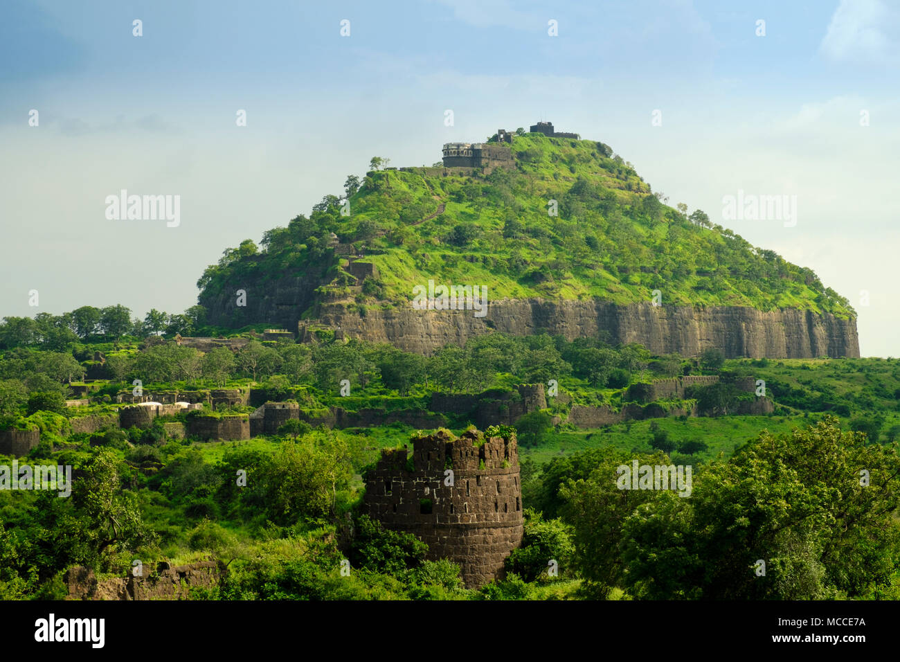
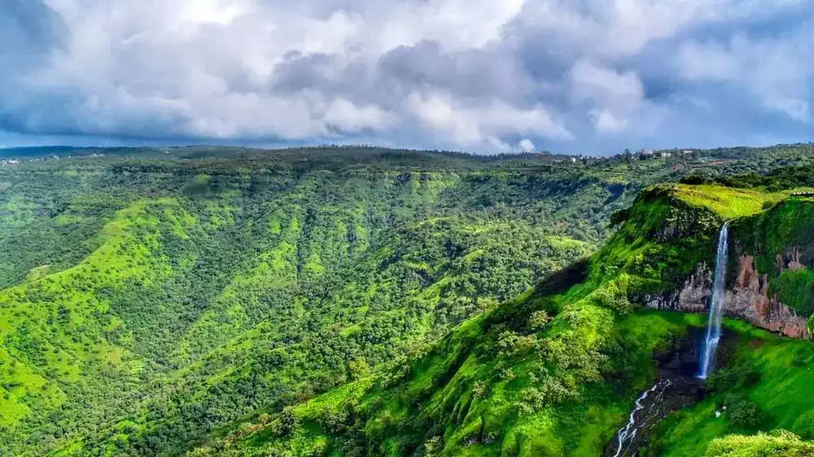
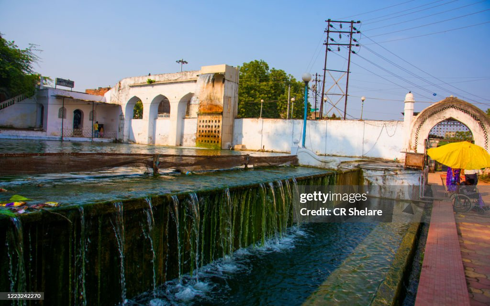
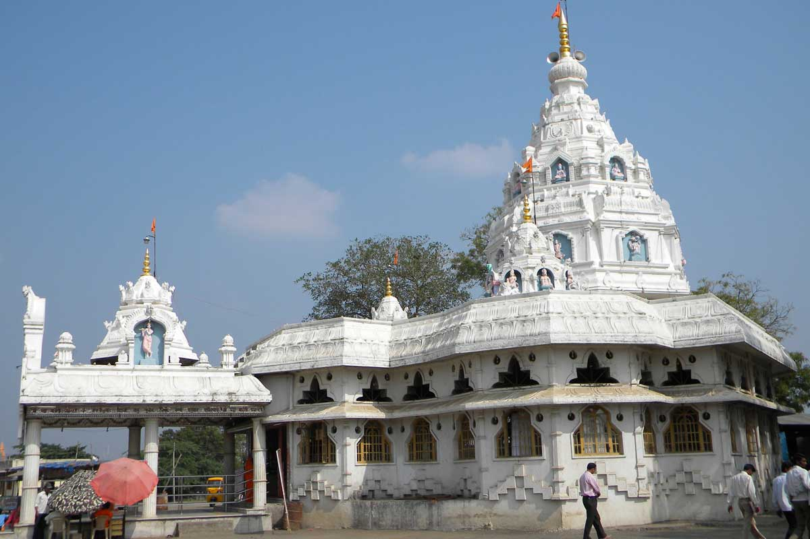
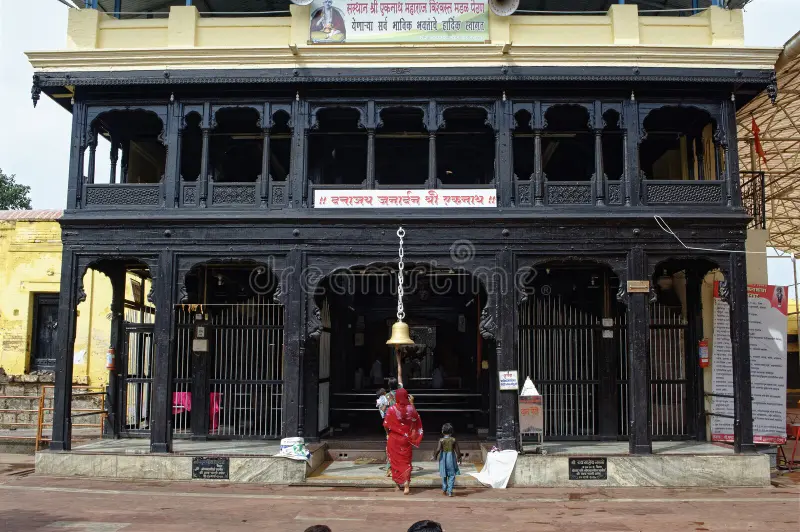

Welcome to
Chatrapati Sambhajinagar Tourism
Heritage | Devotional | Hill Station | Forts & Monuments | Bird Scantuary





Heritage Sites
Ajantha Caves
opening hours: open from 9 A.M. to 5 P.M. (closed monday)

Ellora Caves
opening hours: open from sunrise to sunset (closed tuesday)
forts & monuments
Devagiri Fort
Towering above the Deccan Plateau, Daulatabad Fort stands as a formidable sentinel of Maharashtra’s glorious past. Once known as Deogiri, this breathtaking fortress is a masterpiece of military ingenuity and a witness to centuries of conquests, betrayals, and strategic brilliance. Nestled just 16 kilometers from Aurangabad, it remains one of India’s most intriguing and awe-inspiring historical landmarks, drawing history buffs, adventure seekers, and photographers alike.
Timings
Opening time - 08:00 AM
Closing time - 06:00 PM

BiBi Ka Maqbara
Bibi Ka Maqbara, located in Chhatrapati Sambhajinagar (formerly Aurangabad), Maharashtra, is a 17th-century Mughal mausoleum built by Prince Azam Shah for his mother, Dilras Banu Begum (Aurangzeb’s wife). Known as the "Mini Taj of the Deccan" or "Dakani Taj" for its striking resemblance to the Taj Mahal, it features a central white marble dome, four minarets, and a charbagh garden layout.
Timings
Opening time - 08:00 AM
Closing time - 08:00 PM

panchakki
Panchakki is one of the most attractive sights in Aurangabad city, which is often visited by world tourists who are deeply impressed by its elaborate water works. It particularly has a sheet of water flowing perennially, and setting the large iron blades and stones of flour mill to motion. There still exists in Aurangabad an underground network of water channels constructed by Malik Amber and tradition holds that the water channels that feed the Panchakki were also constructed by him, although much work was done later during the last days of Aurangabad and Asaf Jah I. There is a Dargah of Hazrat Baba Shah Musafir and Hazrat Baba Ahmad Sayid and a mosque and a Sarai inside its premises.
Timings
Opening time - 07:00 AM
Closing time - 08:00 PM
Water Reservoir
Jayakwadi Dam (Nath Sagar)
Located near Nath Sagar Lake in Maharashtra, India, the Jayakwadi Bird Sanctuary, also referred to as the Nath Sagar Wildlife Sanctuary, stands as a haven for a diverse array of migratory and resident bird species. Jayakwadi Bird Sanctuary is a haven for bird enthusiasts and nature lovers, spanning an impressive 225 square kilometres on the banks of the Jayakwadi Dam. This sanctuary boasts a vast number of migratory birds that find solace here. But the sanctuary's appeal extends beyond its feathered residents, it holds a rich history dating back to the time when the dam was constructed, resulting in the formation of this extraordinary natural sanctuary.
Devotional
Grishneshwar Mandir
Grishneshwar Temple is one of the oldest temples located in Sambhaji Nagar, Maharashtra. Grishneshwar Jyotirling temple is dedicated to Lord Shiva and is considered the last Jyotirlinga among the twelve Jyotirlingas. This is the only Jyotirlinga temple in India, where you can find the carving of god Shiva, Goddess Parvati, god Ganesha, and Kartikeya sitting on Nandi with Goddess Mother Ganga on God Shiva’s forehead on top of the temple in white stone, which can be clearly seen from the south entry of the temple.

bhadra maruti Mandir
The Bhadra Maruti Temple stands as a testament to the rich history and cultural significance of the region. This temple, dedicated to Lord Hanuman, serves as a profound religious site for Hindus and offers an unforgettable experience for tourists seeking to explore the spiritual side of this vibrant city. Located in Khuldabad near Aurangabad, the Bhadra Maruti Temple is a sacred shrine dedicated to the revered Hindu deity, Lord Hanuman. It holds a unique distinction as one of the only three temples in India where Lord Hanuman is depicted in the Bhav Samadhi, or sleeping posture, alongside those in Allahabad and Madhya Pradesh. Located just 4 kilometres from the renowned Ellora Caves, this temple attracts devotees from far and wide, particularly on Saturdays during the auspicious month of "Sharavan" according to the Marathi calendar.

sant eknath Mandir
This is the Jalsamdhi (watertomb) place of Eknath Maharaj. Nath merged his soul in Brahmanda at Krishnakamalaateerth. His body was cremated at this place. The next day Tulsi and pimpal seedlings sprouted. At that place, Padukas were established by Nath’s son Haripandit. The wooden core temple that we see today is built by the 11th descendant of Eknath Shri Bhanudas Maharaj Gosawi, Jahagirdar and the main fortification is built by Ahilyabai Holkar. To the right side of the samadhi of Nath are the samadhis of the ancestors of Nath and to the left-hand side are the samadhis of the descendants. At the route of Pradakshina, there is the Samadhi of Udhava, a disciple of Nath; and at the north door there is the samadhi of Gavoba, a disciple of Nath. Mahapooja of the samadhi is performed at all Dwadashis. Shri Eknathshashti is celebrated at a grand level at this place. For this festival, millions of people gather from all over and outside of the Maharashtra
Hill Station
mhaismal
Mhaismal, is a hill station located in the Sambhajinaagar district of Maharashtra in India. Mhaismal is a small village situated at an altitude of 1067 meters, and is located about 12 kms from Khuldabad and about 37 kms from Chhatrapati Sambhajinagar city. Importance of Mhaismal, is that it is located on the way to Ellora Caves, Grishneshwar Temple and Devgiri Fort: all of which are located in the same district near to each other. Mhaismal attracts visitors mostly during monsoons when it is covered in greenery. Mhaismal was formerly called Maheshmal, thanks to the queer village of the same name within the vicinity of the hill station. Mhaismal is a beautiful, unexplored hill station tucked in the Sahyadri mountain ranges. Also called the 'Mahabaleshwar of Marathwada', Mhaismal is a perfect blend of the undefiled nature and the breathtaking terrains. It is famous for its temples, gardens, valleys, caves and forts in its vicinity all adding to its inherent natural charm. The pristine ambience of the place is a treat for the tired urban eyes looking for a quiet weekend getaway from Mumbai, Chhatrapati Sambhajinagar or Pune. It is part of the eastern limits of the beautiful Sahyadri ranges, which give it a very different mountain topography. The plateau here is spread out evenly on the protruding land formations in all the four directions.